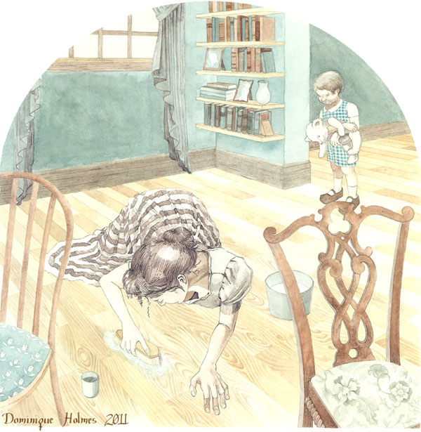

-
Routine and Revolution
by Sadie Stein April 6, 2011
Recently the British tabloid Daily Mail has been running a series called “Confessions of a Reluctant House Husband.” It’s the misadventures, in case the title left you in doubt, of a former breadwinner now reduced to homemaking. Hilarity and heartbreak ensue.
Dorothy Canfield Fisher would doubtless heave a sigh of resignation; she wrote The Home-Maker — a paean to domestic equality — in 1924. By now, she doubtless hoped, the thought of a man assuming domestic responsibilities would be neither noteworthy nor risible. But then, she was ahead of her time. Before Dorothy Dinnerstein was even a glimmer in anyone’s eye, Fisher had produced what, behind its deceptively homely title and gentle mien, was nothing less than a revolutionary work.
The Home-Maker is the story of the Knapp family: Evangeline, the redoubtable mother whose spotless home is the envy of her fellow housewives, and her ineffectual husband, Lester, whose ineptitude for business and disregard for anything mercenary leave the family on the brink of financial ruin. More than this, it’s the story of their three children, trapped in a home with two essentially unhappy people. The family’s fortunes shift when Lester is left injured after an accident – and circumstances place Evangeline in the department store job he’s vacated, while he minds the house. What follows is a domestic renaissance: even as the home’s rigid order deteriorates into cheerful untidiness, both parents find their true callings. He proves a sensitive and natural caretaker; she is an executive by temperament – only cruel irony has allowed them to defy convention and find happiness. Nevertheless, the transformation is heartwarming.
“What she thought was her duty had held her bound fast in a death-like silence and passivity. He remembered the somber, taciturn, self-contained woman who had sat opposite him, year after year, at the supper-table. Could that be the same Eva who now, evening after evening, made them all gay with her accounts of the humors of her profession… He had never even suspected that Eva had this jolly sense of humor!”
Dorothy Canfield Fisher was that rare creature who manages to make reform seem unthreatening: Although an outspoken advocate for social justice and the product of an actively progressive background, Canfield’s numerous bestselling novels were never polemical or overly satirical; they were designed to persuade gently rather than wink at an enlightened few. Though a product of its time, the clarity of her style holds up well: she never resorts to easy sentimentalism in either her adult or children’s fiction. While she takes on provincialism and sacred cows as doggedly as her contemporary Sinclair Lewis, her 11 books tended to be small in scale, more domestic, and essentially optimistic rather than cynical. There’s no particular irony to the title The Home-Maker, loaded though it may be. In this as in all her novels, Canfield dwells on the small details of meals, of housecleaning, of routine that make up her characters’ lives – and as such, the novel is incidentally an informative snapshot of small-town American living between the wars.
Persephone, the British press that reissued the novel, is dedicated to promoting female, often unjustly forgotten, authors, and their mission is explicitly feminist. The Home-Maker might seem a natural choice. And while it is – and deserves to be enjoyed — the author would have objected to a feminist characterization. Although a proponent of women’s causes (her parents were in fact ardent early feminists) she told her publisher that The Home-Maker “should be taken as a whoop not for ‘women’s rights’ but for ‘children’s rights’”; consistent with her Montessori training, her first concern was for children’s welfare in a time when they were often marginalized. And in any event, the author’s sympathies are as much for husband as wife: hers is not an argument for an arbitrary role swap, but a plea to allow individuality to flourish.
The house stands as a handy metaphor for the family’s shifting fortunes: its perfect order is the envy of the rest of the town, and a source of stress and fear to the family’s three children. After the role reversal there is dust in formerly spotless corners, a muddy porch given over to sand-piles and a general subversion of routine that shocks the neighbors. But the implication is clear: “home-making” is occurring in its true sense. When an interfering neighbor chides Lester for the unmanliness of darning a sock, his defense is to-the-point.
“Mattie turned, saw what he was doing, and pounced on him with shocked, peremptory benevolence. ‘Oh, Lester, let me do that! The idea of your darning stockings! It’s dreadful enough your having to do the housework!’
‘Eva darned them a good many years,’ he said, with some warmth, ‘and did the housework. Why shouldn’t I?’ He looked at her hard and went on, ‘Do you know what you are saying to me, Mattie Farnham? You are telling me that you really think that home-making is a poor, mean, cheap job beneath the dignity of anybody who can do anything else.’
Mattie Farnham was for a moment helpless with shock over his attack. When she slowly rose to a comprehension of what he had said she shouted indignantly, ‘Lester Knapp, how dare you say such a thing! I never dreamed of having such an awful idea.’ She brought out a formula again, but this time with heartfelt personal conviction. ‘Home-making is the noblest work anybody can do!’
‘Why pity me then?’ asked Lester with a grin, drawing his needle in and out of the little stocking.“
It’s interesting to consider the author’s approach to home-making in context This was, after all, a mere five years after the pioneering home economics expert Christine Frederick first used the concepts of “Taylorism” to argue in favor of a scientifically-efficient domestic kitchen. Rationalization, as it was known, was intended to elevate the work of home-making to a “domestic science” that paid tribute to its importance and difficulty. Her popular “Household Engineering: Scientific Management in the Home” correspondence course would surely have been well known to Canfield Fisher, and the contrast between this philosophy and the rather ramshackle arrangements of Lester’s more relaxed – but ultimately successful – home-making can’t be accidental. If Frederick’s goal was to elevate homemaking to the standards of the workplace, Fisher seeks to bring the passion of the domestic outside the home. Evangeline is successful in her role as buyer not because she brings “efficiency” to her work, but because she endows it with passion. She abandons the rigid constraints of her housekeeping, just as her husband leaves the precepts of the office behind when he becomes a housekeeper: the point, it’s clear, is not formulas or timetables that count, but a fitness for one’s purpose and the corresponding emotion.
Canfield’s ultimate argument is for flexibility — even in regards to the truth, if need be. When Lester’s improving health threatens the family’s newfound happiness, it comes down to a choice between convention and quiet subversion. The events of the conclusion are almost beside the point; the author has made her argument and by book’s end it’s the arbitrary dicta of convention that emerge as the real villains of the piece, rather than interfering neighbors or tyrannical domestic standards. It would come as no shock to Canfield Fisher, who died in 1958, that the reluctant house-husband and his wife, in 2011, should admit, “our home has never been happier.” Simplistic? Maybe. But sometimes that’s what it takes to get the message across.